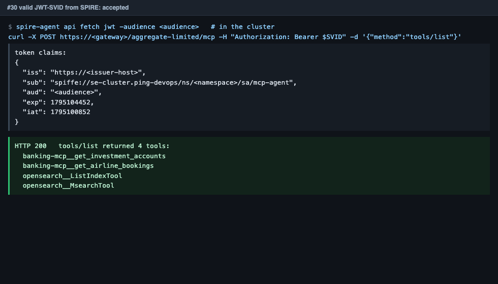
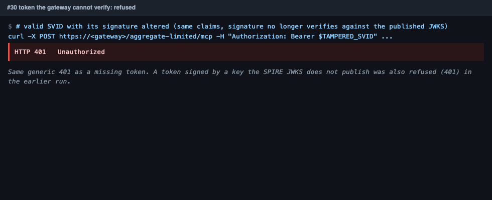

What this proves
The test: present a valid test SPIFFE identity and a mismatched or untrusted identity to the gateway. In Privilege this is a Federated Identity (the new display name for Non-Human Identity; the console API object is still NonHumanIdentity at /v1/nonhumanidentities). The agent proves who it is with a short-lived JWT-SVID instead of a static key, and the gateway checks the issuer, the subject (the SPIFFE ID) and the audience.
| Present | Expected at the gateway |
|---|---|
| Valid JWT-SVID (right issuer, right SPIFFE ID, right audience) | accepted, tools/list returns 200 |
| Mismatched: right issuer, a different SPIFFE ID | 401, subject mismatch |
| Untrusted: the right SPIFFE ID but signed by an issuer / key the gateway does not trust | 401, issuer or signature rejected |
Before you start
| Need | Detail |
|---|---|
| Privilege console admin | Can create Federated Identities, agent keys and grants. |
| An MCP door (app) to protect | An MCP app already registered on the gateway, with at least one tool. |
| A SPIFFE issuer with a public JWKS | An HTTPS JWKS URL the gateway can reach, e.g. SPIRE's OIDC discovery provider exposed publicly, or a small purpose-built issuer. It must sign RS256 or ES256 JWT-SVIDs. |
Stand up an issuer that mints JWT-SVIDs
It must be able to mint three tokens, all with a short lifetime (the identity caps exp − iat):
| Token | iss | sub | aud | signed by |
|---|---|---|---|---|
| valid | the trusted issuer | spiffe://<trust-domain>/ns/<ns>/sa/<agent> | the door URL | a key in the published JWKS |
| mismatched | the trusted issuer | a different SPIFFE ID | the door URL | a key in the published JWKS |
| untrusted | an unregistered issuer | the valid SPIFFE ID | the door URL | a key not in the trusted JWKS |

curl). Public keys only.Create the Federated Identity
console steps UNVERIFIED The console menu path for Federated Identities has not been walked on our tenant; the fields below come from the console's API schema. Record the real menu path with the screenshot. The fields:
| Field | Value |
|---|---|
| Name | for example spiffe-agent-runner |
| Enabled | on (the only kill switch) |
| Platform | spiffe (a UI hint only; never used for verification) |
| Issuer | the exact iss your issuer puts in the token |
| Subject | the SPIFFE ID, e.g. spiffe://trust.example/ns/payments/sa/agent-runner (leave "allow any subject" off) |
| Audience | the door URL (mandatory: an unbound token is replayable elsewhere) |
| JWKS URI | the issuer's public JWKS URL from step 1 |
| Max token lifetime | for example 300 seconds |
| Scopes | mcp only |
API form (same fields, from the swagger schema imodelNonHumanIdentitySpec; confirm against your tenant's swagger before use):
POST /api/<tenant>/v1/nonhumanidentities
{ "Spec": {
"Enabled": true,
"Scopes": ["mcp"],
"Federation": {
"Platform": "spiffe",
"Issuer": "https://<issuer-host>",
"Audience": "<door URL>",
"Subject": "spiffe://trust.example/ns/payments/sa/agent-runner",
"JwksURI": "https://<issuer-host>/.well-known/jwks.json",
"MaxTokenLifetimeSec": 300 } } }
Put an agent key behind the identity and grant the door
A Federated Identity does not authenticate anyone by itself. Create an agent key whose custodian is the Federated Identity, and select the MCP app (that is the grant). Two refusals to expect if you get it wrong:
WorkloadIdentity and a NonHumanIdentity CustodianRef are mutually exclusive: leave the key's own workload identity empty.CustodianRef and UserRef name different principals: clear the user reference if you cloned a key that had a human custodian.
The gateway log should say upserted workload key <key> issuer=… subject=…. If it says rebuilding 0 key(s), nothing is attached to the identity yet.

Present the three identities to the door
Send each token as the bearer on a tools/list call to https://<gateway-host>/<app>/mcp (initialize first, as any MCP client does). Wait about 4 minutes after creating the objects before the first test.
| Token | Expect | Gateway log |
|---|---|---|
| valid | 200, tool list | workload token accepted for key … issuer=… subject=spiffe://… |
| mismatched | 401 | workload token rejected: … (names the claim that did not match) |
| untrusted | 401 | workload token rejected: … (issuer or signature) |

200 and a tool list. Decode and show the claims; hide the token.
401.
401.Evidence that it was real
- The gateway log shows one
workload token acceptedline and twoworkload token rejectedlines, with the SPIFFE subject on the accepted one. - The identity was created in the console (screenshot with menu path), not in a lab.
- The three tokens were minted by an issuer whose JWKS the gateway fetched from a public URL.

If it fails
| You see | Cause |
|---|---|
valid token gets 401, no workload token log line | No agent key behind the identity (rebuilding 0 key(s)), or the identity is disabled, or the changes have not propagated (~4 min). |
signature does not verify against any known key | The issuer is not signing with a key published in its JWKS. |
| audience error | The token's aud is not the door URL the identity names. |
| lifetime error | exp − iat is longer than the identity's max token lifetime. |
valid token accepted but the call is 403 | The key has no grant on the app, or the tool is not allowed. |